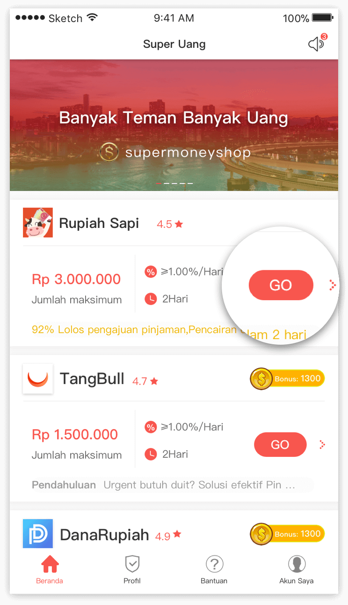
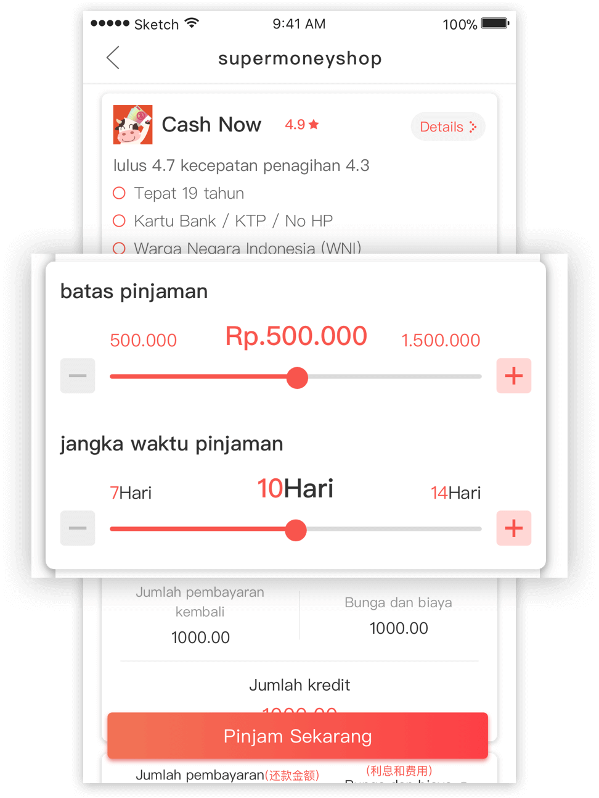
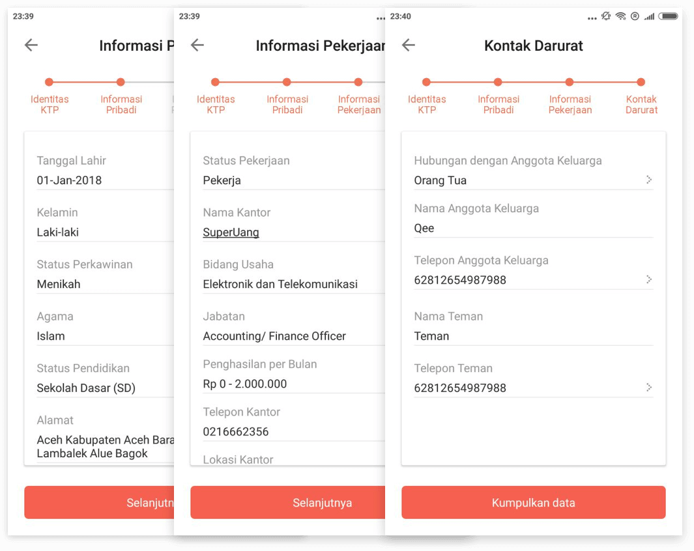
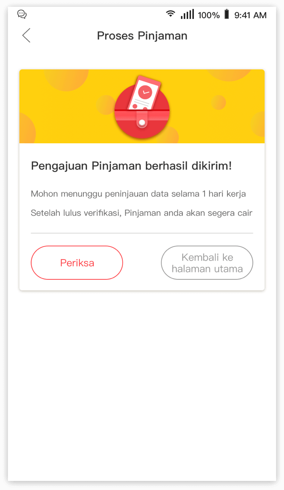
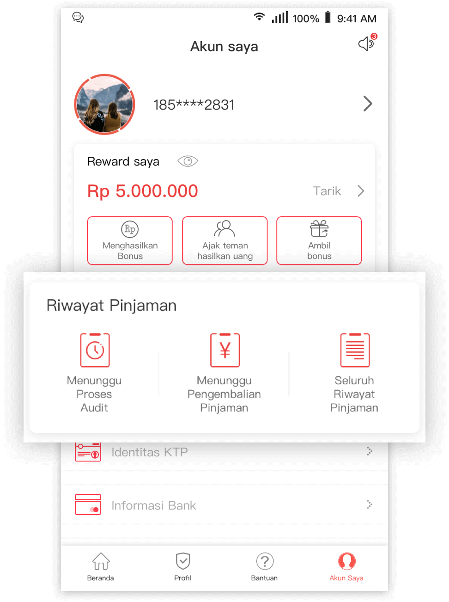

Bagaimana cara mengajukan pinjaman?
Tips
Editor Super Pinjaman
 758
758Langkah 1: Unduh Aplikasi SuperUang, Login ke halaman utama, Pilih "produk pinjaman" seperti Rupiah Sapi, klik tombol "GO”.

Langkah 2: Pilih "batas kredit", "periode pinjaman", "alasan pinjaman", sistem akan secara otomatis memperkirakan bunga dan biaya administrasu, klik tombol "pinjam sekarang" untuk mengajukan permohonan pinjaman. \u2028Tips: batas & kekentuan pinjaman pada setiap produk pinjaman berbeda berbeda.

Langkah 3: Untuk verifikasi informasi KTP, harap pastikan bahwa Nama KTP & NO sama dengan sertifikat KTP. Selain itu pastikan juga bahwa “Foto KTP dan Foto selfie memengang KTP sudah jelas, ini akan meningkatkan tingkat keberhasilan pinjaman.

Langkah 4: Unggah informasi dasar, informasi perusahaan, dan informasi kontak darurat. Harap pastikan bahwa informasinya benar dan efektif. Hal ini dapat sangat menentukan keberhasilan pinjaman.

Langkah 5: Setelah melengkapi informasi, klik "Konfirmasi" untuk mengirimkan pengajuan pinjaman. Diharapkan untuk menyelesaikan pengisian data dalam satu hari kerja. Setelah disetujui, pinjaman akan diproses. Tips: Jangan lupa untuk masuk ke menu
"Profil-> Informasi Band" dan mengisi "Informasi Bank"

Langkah 6: Periksa perkembangan peninjauan pinjaman setiap saat di menu "Akun Saya -> Riwayat Pinjaman". Jika Anda memiliki pertanyaan, Anda dapat menghubungi CS: Facebook:https://www.facebook.com/SuperPinjam/
